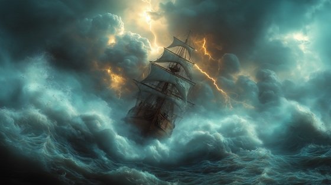

"Storms of the Seven Seas" captures Sinbad’s battle against the most violent storms across the oceans. Each tempest tests his courage, skill, and perseverance. This track evokes the raw power of nature, the chaos of unrelenting waves, and the unyielding spirit of the legendary sailor who faces danger head-on and emerges stronger from every trial.
Storms of the Seven Seas
Winds like blades tear across the night,
The heavens clash with furious might.
Lightning strikes, the oceans roar,
Every wave a deadly chore.
Dark clouds swirl in endless flight,
The world itself consumed in fright.
The tempest rages, the sky ignites,
A trial of courage, endless nights.
Storms of the Seven Seas, I face your wrath,
Tossed by waves along a perilous path.
Thunder shatters the void above,
Yet I sail onward, guided by love.
Water rises, the deck is gone,
Yet still I fight, my will lives on.
Sails are shredded, timbers bend,
I battle nature, foe and friend.
The fury of the oceans tests my soul,
Only the daring survive the toll.
Lightning flashes, the waves collide,
I steer my ship with fate as guide.
Storms of the Seven Seas, I face your wrath,
Tossed by waves along a perilous path.
Thunder shatters the void above,
Yet I sail onward, guided by love.
Horizon lost, the sky a blaze,
The sea a maze of endless haze.
But Sinbad’s courage will not bend,
The storm may roar, yet I transcend.
With every strike and every wave,
I carve my legend, the daring brave.
Torrents crash, and darkness calls,
Yet my heart stands within these squalls.
The winds may rage, the oceans scream,
But I navigate this raging dream.
Storms of the Seven Seas, I face your wrath,
Tossed by waves along a perilous path.
Thunder shatters the void above,
Yet I sail onward, guided by love.
The storm subsides, the dawn appears,
Survivor of a thousand fears.
Sinbad sails on, forever free,
Master of the Seven Seas’ decree.